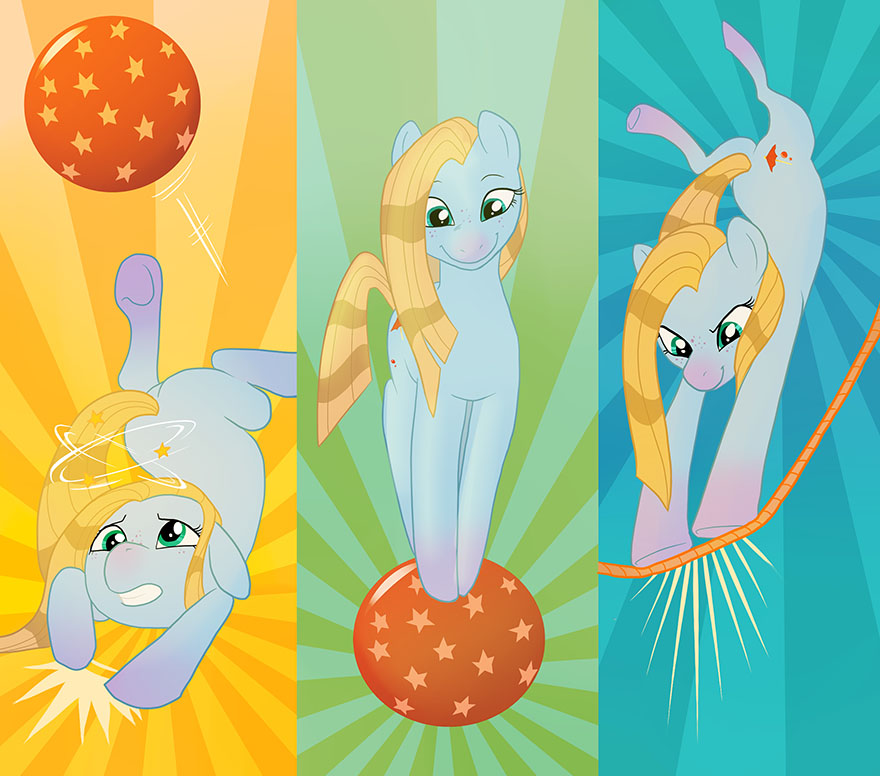

Character Advancement
The Letter to the Princess
Once the action of an Episode ends, the problem is solved, and the story is finished, there is still one phase left: the Letter To The Princess. Just as in the original Friendship is Magic cartoon, it’s not only important that a problem is solved—it’s also important how it was solved and what the characters learned from the experience. To that end, the basis of character advancement and the accumulation of Experience Points in S3E is based not simply on the completion of the Episode itself, but upon the Lessons the characters learned from an Episode. Additionally, just as in the original cartoon, the method of identifying these Lessons and earning Experience Points from them in S3E is for the players to compose their characters’ own Letter To The Princess.
The characters’ Letter To The Princess doesn’t have to be poetic or written in the narrative format of the letters from the original cartoon (although there’s nothing wrong with doing so); it’s perfectly acceptable for a Letter To The Princess to simply be a list of the Lessons the characters learned from playing the Episode. Once they are satisfied with their Letter To The Princess, the players present it to the GM, who then awards the group Experience Points for the Lessons the GM feels are representative of meaningful character growth.
Identifying Lessons
The first step in composing the Letter To The Princess is to identify the Lessons the characters learned over the course of the Episode. Lessons should be meaningful and represent character growth and change as a result of their experiences during the Episode. In addition, Lessons should be phrased as a statement, in a complete sentence. For example, if a character spent a considerable portion of time during an Episode taking care of children who seemed to get into all kinds of trouble by showing up trying to help, they might learn the Lesson, “It’s important to know your limits so you don’t do more harm than good.” Each character’s individual Lessons are added to the list which makes up the Letter To The Princess, and any duplicates are removed; for example, if more than one character learned “It’s better to make peace than to get even,” that Lesson would still only be added to the Letter To The Princess once.
How Lessons Change
As a character progresses through Episodes, accumulating Experience Points and increasing their power and capability, it’s only natural for the scope of the Episodes they are participating in to expand and change; in their youth, a character might deal with the challenges of being a foal-sitter, where later in their life, they might face the responsibilities of ruling an entire kingdom. Because characters gain Experience Points from the Lessons they learn during an Episode, it’s important to understand that the nature of the Lessons a character learns changes and matures over time along with them. No character is ever finished learning Lessons about life and the world around them: it’s just their perspective that shifts as they progress, and even a princess learns and grows—though the Lessons they learn may be different than the ones learned by their subjects.
Lessons & Experience Points
Once the players have composed the list of Lessons which comprises their characters’ Letter To The Princess, they present it to the GM, and each Lesson is discussed: who learned each Lesson, what they learned it from, why it’s meaningful, and how the character(s) changed as a result of learning it. For each Lesson the GM feels is well-established and meaningful to character growth and development, the group of characters earns one Experience Point.
All for One, One for All
Experience Points are earned and awarded as a group, not individually; each character’s number of Experience Points is the same as their group’s total. This means that as the group’s XP total increases and reaches the milestones which grand advancement rewards, all the characters in the group gain those advancement rewards simultaneously.
Milestones & Rewards
As a result of earning Experience Points, in addition to eventually increasing their Experience Tier, a group of characters will reach certain XP ‘milestones.’ These milestones are points at which the group of characters gets a tangible, mechanical reward for the Experience Points they have earned since the last milestone. XP milestones follow a cycle within each Experience Tier, awarding the characters in the group Advancements, new Edges, and new Talents. Each character in the group gains their own advancement rewards, to do with as they choose; for example, when the group reaches a milestone which awards a new Edge, each character in the group gets to choose a new Edge individually. The progression of advancement rewards and XP milestones is as follows:
XP Milestone | Advancement Rewards |
0 XP (Youth) | Character Creation: 1 Talent, 2 Ability Points, 1 Edge, 4 Skill Points |
5 XP | Advancement |
10 XP | Advancement, Edge |
15 XP | Advancement |
20 XP | Advancement, Edge |
30 XP (Adult) | Advancement, Talent |
40 XP | Advancement, Edge |
50 XP | Advancement |
60 XP | Advancement, Edge |
75 XP (Veteran) | Advancement, Talent |
90 XP | Advancement, Edge |
105 XP | Advancement |
120 XP | Advancement, Edge |
140 XP (Heroic) | Advancement, Talent |
160 XP | Advancement, Edge |
180 XP | Advancement |
200 XP | Advancement, Edge |
225 XP (Champion) | Advancement, Talent |
250 XP | Advancement, Edge |
275 XP | Advancement |
300 XP | Advancement, Edge |
325 XP (Sovereign) | Advancement, Talent |
350 XP | Advancement, Edge |
375 XP | Advancement |
400 XP | Advancement, Edge |
425 XP (Celestial) | Advancement, Talent |
450 XP | Advancement, Edge |
475 XP | Advancement |
500 XP | Advancement, Edge |
Advancements
Advancements are small packages of Skill Points, Ability Points, or a combination of the two, representing a character’s progress in training and in developing their unique powers. Each time a character gains an Advancement, they must choose one of three packages the effects of which they wish to gain; and like all advancement rewards, Advancements (and the Skill Points and/or Ability Points they award a character) may not be saved for later—they must be spent immediately upon being gained. The three Advancement packages are as follows:
Advancement | Reward(s) |
Training | Gain and spend 4 Skill Points |
Balance | Gain and spend 2 Skill Points and 1 Ability Point |
Power | Gain and spend 2 Ability Points |
Edges
Each time a character gains an Edge, they must choose a new one from the list in the Skills & Edges chapter and apply its effects. An Edge may only be chosen once, and like all advancement rewards, these extra Edges may not be saved—they must be chosen immediately upon being gained.
Talents
Each time a character gains a Talent, they must choose a new one and apply its Attribute score increase(s) accordingly. Each Talent may only be chosen once, and like all advancement rewards, these extra Talents may not be saved—they must be chosen immediately upon being gained. The list of Talents is as follows:
Talent Name | Attribute Score Increases |
Egghead | +3 Mind |
Iron Pony | +3 Body |
Show Stopper | +3 Heart |
Smart Cookie | +2 Mind, +1 Heart |
Student Athlete | +2 Mind, +1 Body |
Prize Pony | +2 Body, +1 Mind |
Daredevil | +2 Body, +1 Heart |
Drama Queen | +2 Heart, +1 Body |
Crusader | +2 Heart, +1 Mind |